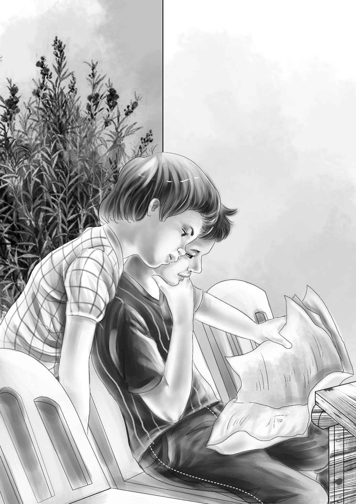

Mike’s Idea
“简姑婆，”杰西欢呼起来，“真高兴你能来！伍德太太要在这里住下了，她还要做馅饼卖呢！”
“我知道！”简姑婆笑着说，“我什么都知道，是一只小鸟儿给我报的信。”
“谁？小鸟？”班尼惊讶地问。
“哈，应该说是大鸟吧！”简姑婆说，“是经理加德纳先生告诉我的，他还专程派了车接我过来。”
说着，简姑婆走进了大房子。
迈克马上凑了过来，并伸出了手，简姑婆笑眯眯地把报纸递给他。
她说：“报纸是麦琪找到的。我还没有时间仔细看，但我相信这就是你要的那一份，迈克。”
话音刚落，大家就抢着给简姑婆展示两间新房。
“房间都有门！”班尼说，“总共两扇门，每间房都有一扇。”正在安门的工人被班尼逗笑了。
杰西给简姑婆看了那几桶面粉。维莉则带姑婆参观了储物架，架子上已经摆满了碗和碟子。
这时，简姑婆送的礼物也被人拿了进来：一些水桶、长勺子、小平底锅和几把小勺子。
“伍德太太，以后恐怕你得自己为家人煮饭了！”简姑婆说，“请人做饭对你们来说开销太大了！”
“您说得对，奥登小姐，”伍德太太说，“我也乐意亲手为孩子们做饭。诶，迈克呢？”
迈克不见了。
“他去哪儿了？”杰西着急地喊道，“刚才还在这里的！”
“不要紧！”伍德太太笑着说，“迈克能照顾好自己。他一定又在搞什么新花样了。”
确实如此。迈克现在正在办公室里和卡特先生说话。那张报纸被摊开放在桌子上，两人正在看报上的照片。
“看到这人了吗？”迈克说，“花花就是冲着他吼叫的。他戴的帽子看不出是不是蓝色的，但花花以前一定见过他。”
“我也见过这个人。”卡特先生皱紧了眉头。
“在哪儿见过？”迈克问。
“我也记不清确切的地方了。”卡特先生回答道。
“他到过火灾现场，”迈克说，“我亲眼见过。”
“他一定也来过矿上，”卡特先生说，“这张报纸就是证明。”

“我想他不是什么好人，”迈克说，“看面相很粗鲁。”
“我也这么认为。”卡特先生说，“迈克，咱们得格外小心。”
突然，一阵敲门声传来。
“进来吧！”卡特先生应道。
来者是班尼。
班尼松了口气：“迈克，原来你在这里！我们到处都找不到你。告诉你，我又有新发现了。”
“快坐下吧，”卡特先生微笑着说，“我们都坐下来，洗耳恭听你的新想法。”
班尼开始绘声绘色地讲了起来：“火灾前，迈克正准备给花花建个新窝，你知道的。”
“不，我并不知道。”卡特先生说。
“他确实已经准备开建了，”班尼说，“不过你也了解迈克的，他做事不是很利落。”
“我很利落好吧！”迈克抗议道。
“好了，迈克，别吵！听我说！你将地下室里堆满了木板，有的放在暖气片旁，有的放在楼梯口，还有的散落在屋子的两边。”
“没错，我是这么放的！”迈克说，“可木板都被码放得很整齐，很井井有条啊！”
“我的意思是，地下室里到处是木板，”班尼大声说，“这就是房子四面起火的原因！你还不明白吗？”
“班尼，你推理得很好！”卡特先生说，“但消防员认为是有人在故意纵火！”
“不是我，不是我！”迈克气急败坏地喊了起来。
“迈克，别激动！”卡特先生严肃地说，“我从没怀疑过你，但肯定是有人放了火。”
“那会是谁呢？”迈克困惑地问，“谁会在花花待的地下室放火，烧毁我的家？”
“我也不清楚。”卡特先生说。
班尼问道：“迈克，你仔细想想，有没有说过得罪人的话？”
“从没说过！”
“绝对说过！”班尼说，“迈克，你一向是口无遮拦的。”
迈克开始回想，“也许是说过吧，可那已经是去年夏天的事了，”他说，“班尼，还记得吗？我当时说，幸好奥登小姐没有把农场卖给那三个人，还说过，只要一见到他们，我就能立刻认出来。”
“哦，难怪！”卡特先生恍然大悟道。
班尼说：“可是迈克，你并不认识他们，也从没见过他们啊！”
“我当然知道这一点！”迈克说，“真后悔当初说了瞎话。应该是照片上这人听到我说的话，以为我真的能认出他来。”
“好了，迈克，”卡特先生沉吟道，“现在总算知道为什么会传出是你放火的谣言了。照片里的那人很可能是听到了你说的话，而且害怕被你认出来，因此一有机会就做出伤害你的事情。”
“可是我们没有证据。”班尼说。
“我们会找到证据的，”迈克说，“等着瞧吧！”
“是的，迈克，我相信咱们能找到证据。孩子们，现在我必须跟你们说一件事儿，我知道你们都很心直口快，可这件事一定不能到处乱说。”
“我不会说的。”班尼保证道。
“我也不会。”迈克也不甘示弱。
“众所周知，去年夏天想买奥登小姐农场的那三个人是诈骗犯，他们一发现铀矿，就隐瞒真相，企图以超低价买到农场。他们在其他州已被联邦调查局通缉了，到这里才被抓住。不过我听说有一个逃脱了。”
“你也是联邦调查局的人吗？”班尼惊讶地问。
“我替你爷爷工作，同时也会协助联邦调查局。我认为，照片上的这人很可能是三个诈骗犯之一，只是照片上看不清他的长相。”
“一定是简姑婆不肯卖农场，让他们气到发疯了。”班尼说。
“对！”卡特先生说，“如果我们不阻止他，他很可能会破坏铀矿，所以我们刚刚增添了两名夜班守卫。伍德太太在这里应该很安全。”
“咱们赶紧去为他们准备过夜的东西吧！”班尼提议道。
他们离开的时候，屋子里的一切仍然井然有序地进行着，大家兴致勃勃地布置着房间：摆放馅饼的桌子被支了起来，面粉桶也被打开了。帕特又带来了更多的客人，他们送了大罐樱桃、桃子、蓝莓和苹果馅料，还有几大袋糖和成摞的馅饼烤盘。
“哦，每个人都这么好！”伍德太太的声音哽咽了。
接下来，烤炉加热了，冰箱启动了，水槽也哗啦啦地注满了水。一罐罐做馅饼用的漂亮水果已经准备妥当，擀面杖和面板也摆到了桌子上。
班尼和迈克来得正是时候，他们帮忙支起了床铺。杰西和维莉则铺上了干净的白床单。
然后，迈克又做了个出乎大家意料的决定：“妈妈，我要到班尼家去住。奥登小姐已经为我准备好了卧室。她说我可以把宝贝全带过去，花花也能进我的房间。我要是不去的话，多辜负他们的好意啊！”
“哈，迈克！”卡特先生大声说，“你变得越来越善解人意了呢！”
“你愿意搬过来和我们一起住，我很高兴。”简姑婆微笑着说。
“去吧，迈克。”妈妈同意了，“你想得很周全！”
“我要跟班尼一起回去，”迈克说，“正好顺路可以聊聊天。”
“是啊是啊！”亨利说，“你俩当然有很多话可以聊！”
“那我留下来照顾您吧，妈！”帕特说。
“好，”伍德太太笑着说，“帕特会照顾我的。卡特先生说今天晚上的夜班守卫从四个增加到六个，不知道是什么原因。”
迈克和班尼看了看对方，彼此心照不宣。